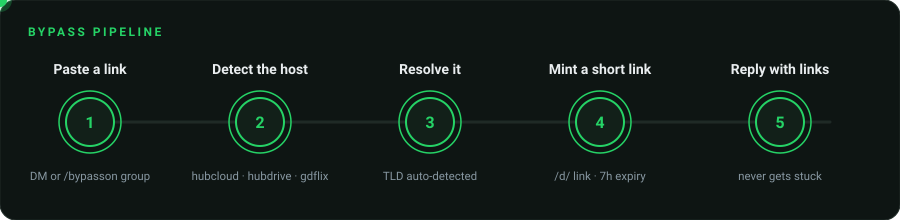
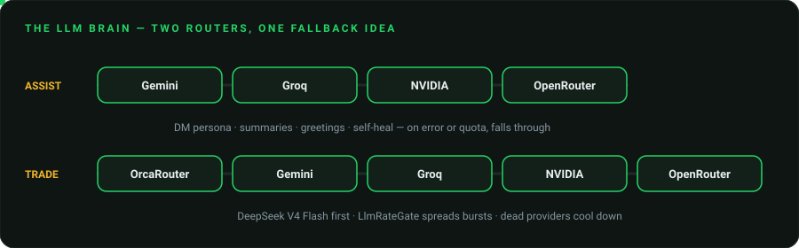
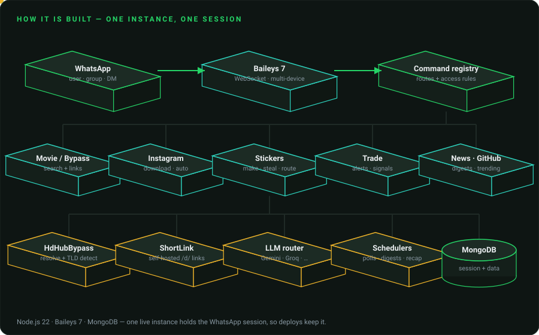
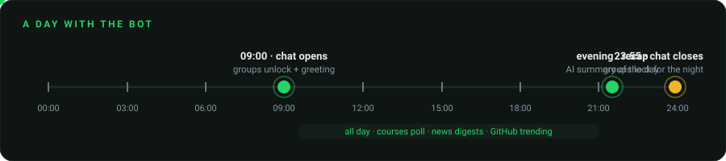

Movies with download links that actually work. Instagram downloads. Stickers. Trade alerts. And an LLM that answers DMs, writes the daily recap, and heals the bot itself — with two fallback routers, not one API key and a prayer.

Paste a hubcloud, hubdrive or gdflix link in a DM and it bypasses itself — no command needed. Groups work the same once a staff member runs /bypasson. Or /bypass <link> anywhere, up to 5 links at once.

Hubcloud TLDs rotate; the bot doesn't care. Every successful fetch records the live TLD after redirects, and a failed fetch probes the other known TLDs — no more hand-editing links when hubcloud moves. Every direct link gets a self-hosted /d/ link that expires in 7 hours, so a leaked link dies on its own. And it can't get stuck: progress edits are fire-and-forget, every short-link mint is capped at 8 seconds, and a stalled result edit falls back to a fresh message.
Two real fallback routers. On an error or a quota hit, the request falls through to the next provider; a dead provider cools down instead of being retried — one interview-question generation once took 163 seconds retried against a dead provider, and that's what the cooldown fixed. Bursts spread across providers through a per-provider rate gate instead of stampeding the first one.

| Router | Chain | What it powers |
|---|---|---|
| Assist | Gemini → Groq → NVIDIA → OpenRouter | /assist DM persona, group recaps, auto-chat greetings, /fix self-heal |
| Trade | OrcaRouter (free DeepSeek V4 Flash) → Gemini → Groq → NVIDIA → OpenRouter | Trade alerts, /tradenow, /swing, /expiry |
The flow is boring on purpose: WhatsApp → Baileys socket → command registry (routes + access rules) → one controller per area → services that do the work → MongoDB, which also stores the WhatsApp session, so a redeploy keeps the login.


/movie search with live progress, short links, TMDB upcoming, genre and trending.
Auto-bypass in DMs and /bypasson groups, hubcloud TLD auto-detect.
Download posts and reels (/insta); auto-download in DMs and groups with /instaon.
Create, steal and convert stickers; auto-forward from WhatsApp channels into target groups.
Polls free courses and posts to activated groups, no duplicates per group.
Scheduled Inshorts tech digests and trending repos, on your schedule.
End-of-day AI summary of what the group actually talked about.
Locks and unlocks group chat daily — opens 9 AM with an LLM greeting, closes 11:55 PM.
NSE F&O alerts, /tradenow, /swing, /expiry, and measured win rates.
Warns, message delete helpers, welcome messages, group admin tools.
Premium and mods, member scrape & broadcast, Drive sources, /assist, /fix self-heal, /deploy.
Web admin panel (/admin?token=…) and a live dashboard.
Use /help on WhatsApp for the live list, filtered by your role and chat type.
/ping /help /movie /upcoming /genre /insta /sticker /steal /toimg /rgb /horo /advice /facts /news /github /posted /status /checklimit
/bypass /bypasson /bypassoff
/activate /deactivate /courson /coursesoff /newson /newsoff /githubon /githuboff /autochat /instaon /instaoff /stickeron /stickeroff /movieon /movieoff /summaryon /summaryoff /summarynow /trending /tradelert
/setwc /warn /warns /mywarns /clearwarns /dellast /delall /groups /pause /resume /clear /confirm /cancel /addadmin /removeadmin /admins /increaselimit
/addpremium /removepremium /premium /addmod /removemod /assist /fix /heal /addchannel /removechannel /channels /scrap /scrapmembers /broadcast /grouppost /driveurl /deploy
/activate — turns on default group features and shows the owner @mention./movieon, /newson, /githubon, /instaon, /summaryon, /autochat on, /tradelert on.git clone https://github.com/ProNoob-Dev/WA-BOT.git
cd WA-BOT
npm install
cp .env.example .env # then edit values
npm startSet at least MONGODB_URI and OWNER_NUMBERS in .env. Run npm start and scan the QR from the terminal with WhatsApp. Auth is saved in MongoDB — redeploys keep the session if the same DB is used. Dev mode: npm run dev. Fresh QR: npm run clear-auth. Offline checks: npm test.
Full variable list with comments: .env.example. Deploy guides: Render and Koyeb (free tier, never sleeps).
Yes. The WhatsApp session lives in MongoDB, not a local auth folder. Redeploy with the same database and the bot comes back without a new QR.
No — one live instance should hold the session. A second instance fights for it and both get logged out (there's an instance lock in the code).
Daily limits on movie search and bypasses. Premium and staff are unlimited — the owner grants premium with /addpremium.
To the bot's own server (/d/<code>), not a public shortener. They expire in 7 hours.
At least one of Gemini, Groq, NVIDIA or OpenRouter. The routers fall through the chain, so one key is enough to start and more keys just add resilience.